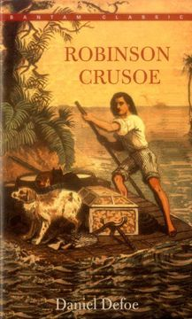

Robinson Crusoe
Daniel Defoe

En 1709 un marinero escoses llamado Alexander Selkirk fue hallado en una isla de archipielafo de Juan Fernandez donde permaneció 4 años solo. De vuelta a Inglaterro difundió su historia ganando fama entre las personas, una de ellas Daniel Defoe quien le dió forma a su relato incluyendo ciertas libertades literias creando la novela Robinson Crusoe que es un clásico de la lectura logrando un gran número de ventas en el mundo.